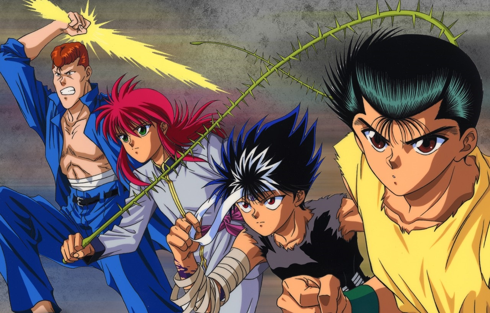

Introdução

Yu Yu Hakusho é uma série de mangá shonen que conta a história de Yusuke Urameshi,
um delinquente de quatorze anos de idade que morre atropelado por um carro ao tentar salvar a vida de uma criança,
mas ganha a chance de reviver com a condição de se tornar um Detetive Espiritual.
Abaixo temos mais algumas informações interessantes sobre a obra.
Autor
A série foi escrita e ilustrada por Yoshihiro Togashi, um mangaká japonês nascido em 27 de abril de 1966, além de Yu Yu Hakusho também foi criador de Hunter x Hunter.
Mangá
Foi serializado pela revista japonesa Weekly Shōnen Jump a partir de dezembro de 1990 a julho de 1994 e possuí 175 capítulos, compilados em 19 volumes.
Anime
Foi dirigido por Noriyuki Abe e produzido pelo estúdio Pierrot. Possuí 112 episódios, dividido em 4 sagas.
Exibição
O anime foi exibido no Japão pela Tv Fuji de 10 de outubro de 1992 até 07 de janeiro de 1995. No Brasil foi exibido pela Rede Manchete, Cartoon Network e etc.